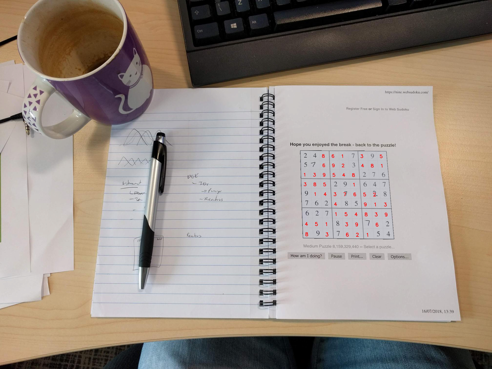
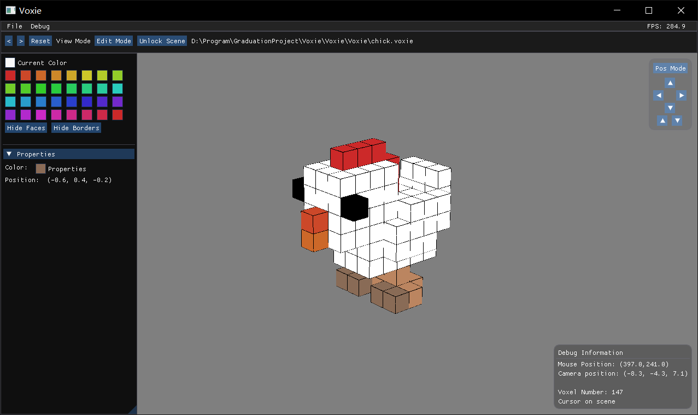

About Me
Email: zhiyilai at umass dot edu
CV | Github
I am currently a Computer Science master’s student at UMass Amherst. Prior to joining UMass Amherst, I obtained my bachelor’s degree in Computer Science and Technology from Huazhong University of Science & Technology (HUST).
Research Interest
- 3D Vision
- Video Analysis
- Self-Supervised learning
Projects
Deep Sudoku Solver
An image to image Sudoku solving pipeline using CNN for image segmentation and OCR(Optical character recognition).(code)

Voxie
A simple voxel editor powered by OpenGL and ImGui.(code)
